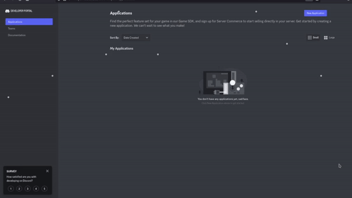
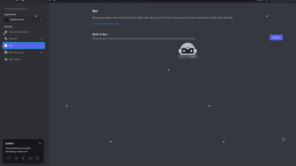
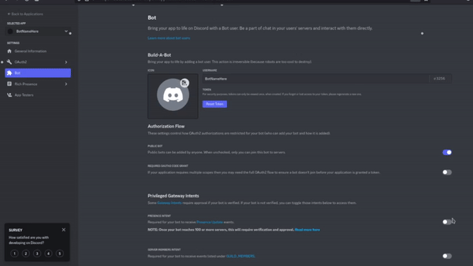

Get Started
Learn how to install and use GiveMeBadge, this guide is pretty concise and also mentions some common issues but, you may also find use in either one of these video tutorials.
No voice overVoice over (by NTTS)
Installation
GiveMeBadge requires a few things to function:
- A Discord Bot (create one using the Discord developer portal)
- Python 3.8 or above (https://www.python.org/downloads)
- The recommended version of Python to use is 3.10.2
- A Discord server that you own
- Make sure to "enable community" in your server if you haven't already! (Settings -> Enable Community)
Let's disect each part a bit for those of you who need some extra guidence
Creating a Discord bot
To create a Discord bot via the Developer Portal follow these steps
1. Create a new application
2. Add a bot to the application
3. Copy bot token and store it somewhere for later
Installing Python
Installing Python is relatively the same on each platform, just go to https://www.python.org/downloads and download version 3.8 (or greater), recommend version is 3.10.2. Install the file for your respective operating system, for example Windows users would install the Windows installer (64-bit or 32-bit depending on your system)
GiveMeBadge
To install GiveMeBadge you must first download the GiveMeBadge repository. Extract the contents of the GiveMeBadge zip file into a folder. Now open the folder in a command prompt (or terminal depending on your system). On Windows open a command prompt and type cd, then drag the desired folder into the command prompt.
Install all modules in requirements.txt, to do this run the following command for your respective system
$ python -m pip install -r requirements.txt
$ python3 -m pip install -r requirements.txt
If the installation fails try running your command prompt as administrator (or for mac/linux use sudo). Now run index.py
$ python index.py
$ python3 index.py
You'll eventually be propmted to enter your bots token (the thing we copied earlier), enter your token and press enter. GiveMeBadge will give you a link which will allow you to invite your bot. Invite your bot to the server of your choice, then in that server type /hello
That's it! Follow the instructions given to you by the bot and you'll get your badge in no time! If you need any support join the discord server!
Issues
Add some common issues here